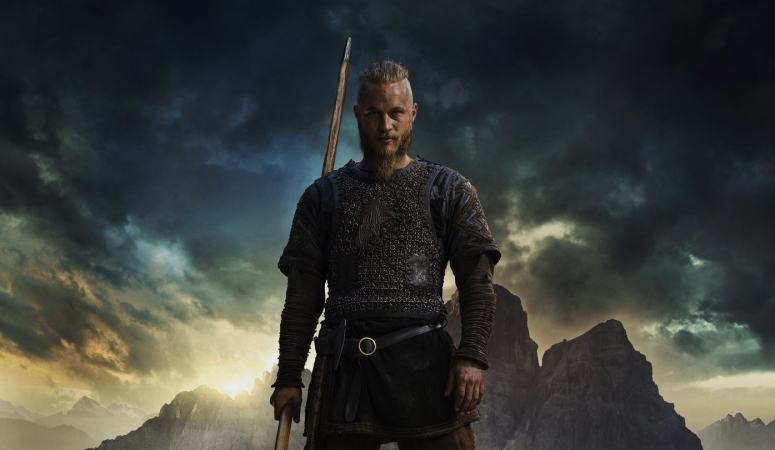

Ragnar
According to the Seer, Ragnar was born and raised in the lands near Kattegat, in
southern
Norway, and earned a reputation as a clever boy. When Ragnar was fifteen, King Froh
of
Svealand invaded Norway and killed the Norwegian King Siward.
Ragnar joined with
Siward-loyalists to drive out Froh. King Froh was famous for carrying tame serpents
around
his neck in battle who would bite his enemies while he fought them. For the purpose
of
fighting Froh, Ragnar fashioned a coat and breeches from a hairy animal hide. In the
battle
that followed, Ragnar faced off with Froh and the serpents could not bite through
the
hide
because of all the hair. Thus, Ragnar earned his name "Lothbrok," which means "the
hairy-breeches."
Lagertha
Lagertha is the first and former wife of Ragnar Lothbrok and the former Queen of
Kattegat.
She is the mother of Björn. Lagertha is an Earl and a fierce shield-maiden.
Lagertha was brought up by her father to be a shield-maiden. At an unspecified time,
Ragnar
went to Lagertha's home to confess his love for her, but he was set upon by a bear
and
an
enormous hound who guarded her home. Ragnar killed the bear with his spear and
strangled
the
hound with his bare hands, thus gaining her hand in marriage. It is unknown whether
Ragnar's
story is real or a child-friendly tale to his son Björn referencing his battle with
Rollo,
who was known as a "bear", over Lagertha's love, as Lagertha also had a relationship
with
Rollo and is unsure who Björn's biological father is.
Athelstan
Athelstan is a young
Anglo-Saxon Christian monk taken as a slave by Ragnar Lothbrok from the Lindisfarne
Monastery. He is torn between Viking and Christian beliefs
Athelstan was born to Northumbrian parents who already had four sons and a daughter,
and
couldn't afford yet another child in their home. So, he was placed in the
Lindisfarne
Monastery. Eventually, Athelstan found happiness, great freedom, and joy in serving
the
head
of the monastery, Father Cuthbert. He had learned to forget about himself and has
devoted
his life to Christianity. Living in the monastery also saved him from possibly dying
of
fever like the rest of his family.